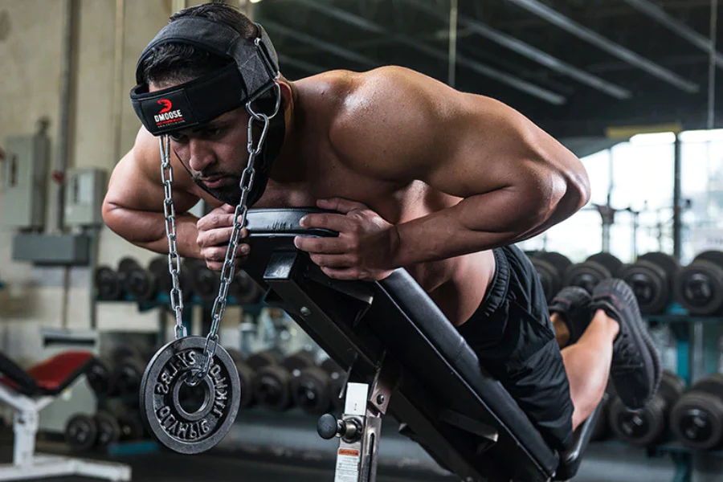

Neck training is often overlooked in fitness routines, but its importance goes beyond aesthetics. The neck, housing the cervical spine and supporting muscles, plays a pivotal role in overall health. Neglecting neck exercises can lead to poor posture and increased susceptibility to injuries. Strengthening these muscles enhances alignment, stability, and reduces the risk of concussions, particularly relevant for individuals involved in contact sports. Moreover, a well-conditioned neck contributes to a balanced physique. Simple exercises such as neck tilts and nods can be incorporated into routines to address this often-neglected aspect, promoting comprehensive fitness and resilience.
Neck workouts are frequently underestimated in fitness regimens, yet they offer essential benefits. Targeting the muscles in the neck through exercises like tilts, nods, and resistance training not only promotes better posture and alignment but also enhances overall stability. These exercises are particularly valuable for athletes engaged in contact sports, as a strengthened neck can reduce the risk of injuries and concussions.
Neck training can be easily accomplished using everyday items found in your home, such as a backpack loaded with books or a hefty rock. Alternatively, some individuals opt to purchase specialized harnesses for more targeted training. Ultimately, the choice between DIY solutions and dedicated equipment is a matter of personal preference, allowing individuals to tailor their approach to neck training based on what suits them best.
|  |
|
Performing neck curls, also known as neck flexion exercises, should be done with caution to avoid injury. Here's a step-by-step guide on how to do basic neck curls:
Lie down on your back on a flat surface, such as an exercise mat or bench. Ensure your head and neck are supported.
Keep your head and neck in a neutral position to begin. This means your head is in line with your spine, and your neck is not excessively flexed or extended. Get your weight and gently put it on your forehead.
Gently and slowly lift your head off the ground by flexing your neck muscles. Focus on using the muscles at the front of your neck to bring your head towards your chest.
Move through a comfortable range of motion. Avoid straining or forcing the movement. Start with a small range and gradually increase as your neck muscles become stronger.
Perform the exercise in a controlled manner, emphasizing the contraction of the neck muscles. Avoid any sudden or jerky movements.
Lower your head back to the starting position in a controlled manner.
Begin with a small number of repetitions (e.g., 8-10) and 1-2 sets. Gradually increase the number of repetitions and weight as your neck strength improves.
Performing neck extensions, or neck extension exercises, should be approached with caution to avoid strain or injury. Here's a step-by-step guide on how to do basic neck extensions:
ie down on your stomach on a flat surface, such as an exercise mat or bench. Ensure your head and neck are in a neutral position to begin.
Place your hands by your sides, palms facing down. Alternatively, you can interlace your fingers and place your hands behind your back.
Gently and slowly lift your head off the ground by extending your neck backward. Focus on using the muscles at the back of your neck to bring your head towards the ceiling.
Move through a comfortable range of motion. Avoid straining or forcing the movement. Start with a small range and gradually increase as your neck muscles become stronger.
Perform the exercise in a controlled manner, emphasizing the contraction of the muscles at the back of your neck. Avoid any sudden or jerky movements.
Lower your head back to the starting position in a controlled manner.
Begin with a small number of repetitions (e.g., 8-10) and 1-2 sets. Gradually increase the number of repetitions and weight as your neck strength improves.

Neck bridges are an advanced exercise that should be approached with caution to avoid injury. It's important to note that neck bridges are not suitable for everyone, especially individuals with pre-existing neck issues or those who are new to strength training. They are mostly used by professional athletes.
Begin by lying on your back on an exercise mat.
Place your hands on the ground beside your head, fingers pointing towards your feet. Your palms should be flat on the ground.
Bend your elbows and place them close to your head.
Press through your hands and lift your hips off the ground. Engage your core muscles to maintain a straight line from your head to your hips.
Slowly arch your back and lift your chest towards the ceiling, allowing your head to come off the ground. Keep your weight on your hands and the top of your head.
Once your weight is on your hands and head, gently extend your neck backward. Be cautious and move within a comfortable range of motion to avoid straining your neck.
Hold the position briefly, then return to the starting position by reversing the movement – lowering your chest, arching your back, and finally lowering your hips to the ground.
Start with a small number of repetitions (e.g., 3-5) and 1-2 sets. Gradually increase the number of repetitions and sets as your neck strength and flexibility improve.
The neck has a major impact on appearance and attractiveness, influencing the perceived balance and proportion of the body and contributing to a sense of physical harmony. A well-maintained and toned neck can enhance posture, creating an aura of confidence and poise. Additionally, as a visible part of the body, the neck is often considered in the realm of aesthetics, emphasizing the importance of its care and attention in personal grooming routines.